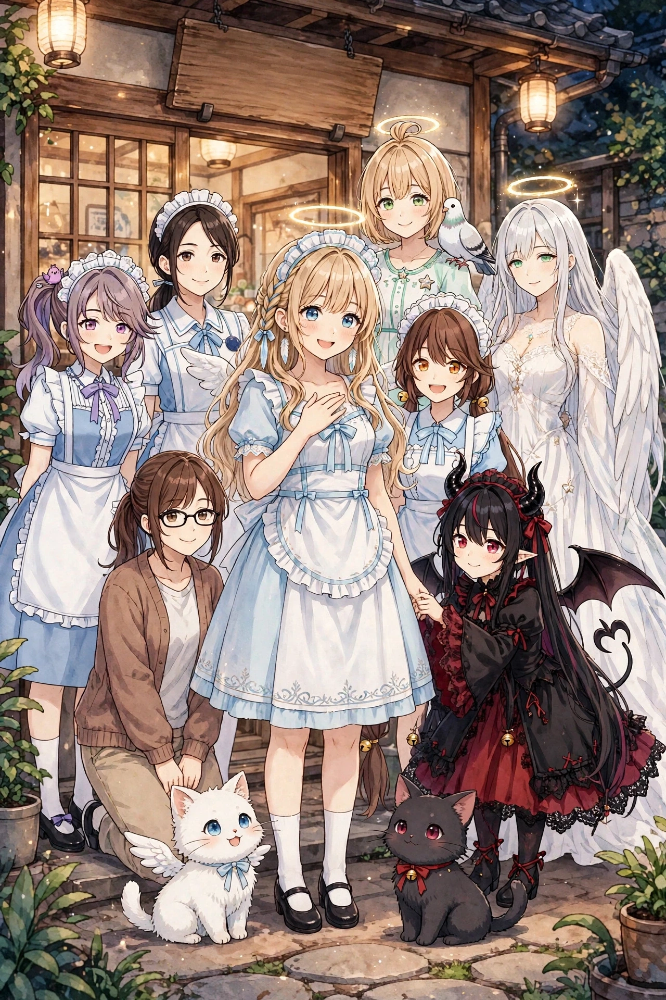
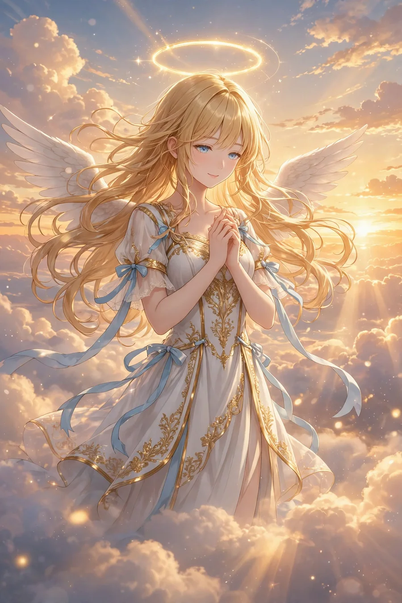

第12弾『メイドリフレ修行編』
メイドリフレ店「てんしのたまご」での修行編。店長・橘 葵、先輩メイド・鈴原ことり、同期・早瀬りんが初登場する30点。

22歳の見習い天使セラフィナの公式サイトです。前回の降臨はルネサンス期のイタリア。それから約500年、今度は大阪・日本橋（オタロード）に降臨しました。コンビニ、メイドカフェ、フィギュア店、ガチャ、カラオケ……現代日本に少しずつ染まっていく日常を描くコメディ作品です。このサイトでは、イラストパックの紹介、登場キャラクター、コレクション図鑑、無料ガチャ、ブラウザゲーム、季節イベントの情報をお届けします。
相棒は翼のある白い子猫モコ。見習い悪魔のルチア、先輩天使のガブリエラ、後輩のフィオレッタ、日本橋のフィギュア店員・二宮ゆかりも登場します。作品の原画イラストパックはBOOTH「angel222」で、グッズはSUZURI「222キャラ工房」で販売中です。
セラフィナの物語は、第1弾『降臨 〜日本橋に染まるまで』から始まります。まずは無料のガチャとブラウザゲームで、世界に触れてみてください。原画を大きなサイズで楽しみたい方には、物語の始まりの第1弾（30点・500円）が入口におすすめです。
セラフィナと仲間たち。それぞれのページでプロフィールと登場パックを紹介しています。